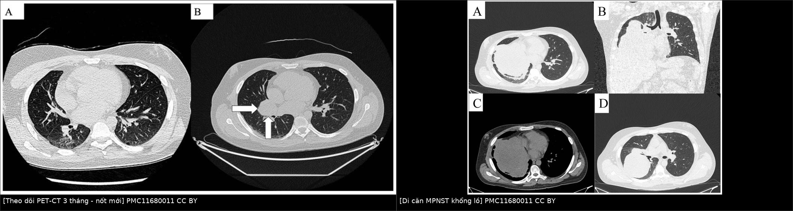
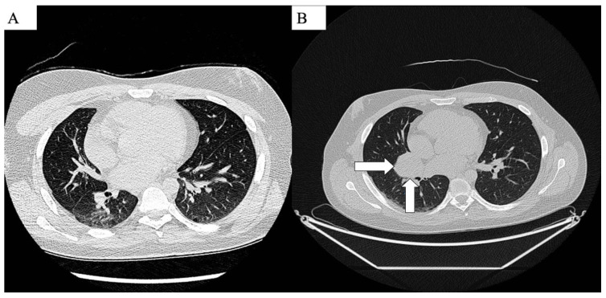
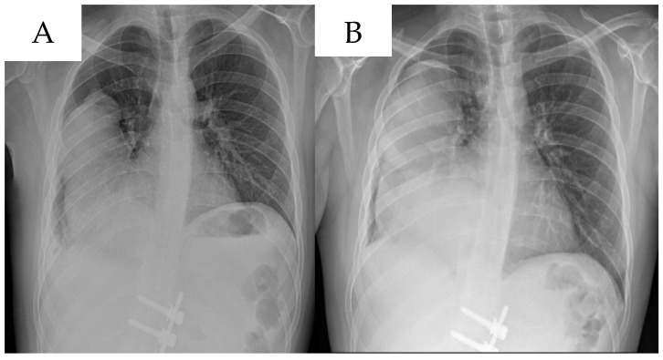
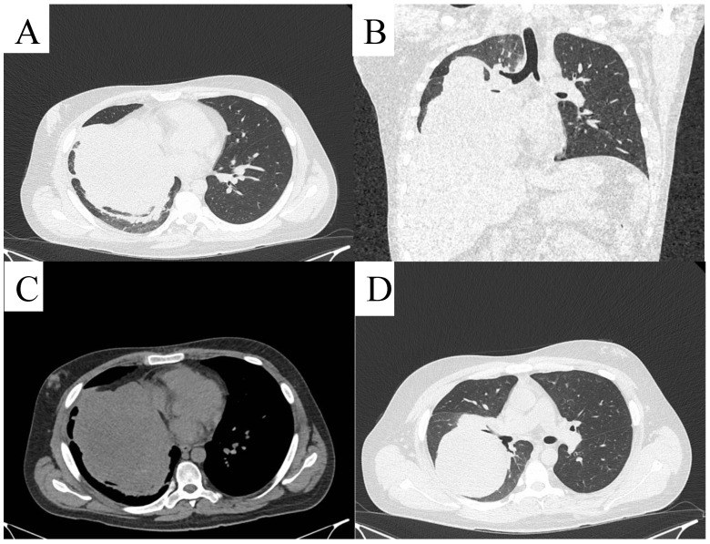

381 — Di căn phổi của MPNST: cắt nốt phổi hay xạ định vị / MPNST lung metastases: metastasectomy versus SBRT
Tags: pattern:not pattern:da-not pattern:di-can vung:phoi score:RECIST protocol:CT-nguc protocol:PET-CT protocol:SBRT incidentaloma:not-phoi
Mức chắc chắn (certainty): tổng hợp y văn (literature synthesis) — tổng hợp 3 cohort sarcoma mô mềm có cắt nốt phổi (PMC13604907, PMC12222427, PMC11557538), 1 cohort SBRT sarcoma (PMC12558367), 1 phân tích gộp cắt nốt vs SBRT (PMC13358817) và 1 cohort áp lạnh (PMC13595653); phần quiz là ca nguyên văn của bài gốc (PMC11680011). Chưa có thử nghiệm ngẫu nhiên riêng cho MPNST — số liệu là của sarcoma mô mềm nói chung.
1. Tổng quan bệnh học – cơ chế hình ảnh
1.1 Vì sao phổi là đích di căn đầu tiên?
- MPNST là sarcoma độ cao, kháng hóa – xạ tương đối, di căn theo đường máu. Tế bào u theo tĩnh mạch chủ → tuần hoàn phổi, bị giữ lại ở giường mao mạch phổi (giường mao mạch đầu tiên sau tim phải) → phổi là nơi di căn hay gặp nhất; với sarcoma mô mềm nói chung, ~80% di căn xa là phổi (bài 379).
- Hệ quả hình ảnh: di căn phổi thường nhiều nốt, tròn, đặc, phân bố ngoại vi và ưu thế đáy (nơi lưu lượng máu cao nhất) — khác di căn lymphangitic (dày vách, nốt quanh mạch bạch huyết) và khác ung thư phổi nguyên phát (một khối, có xâm lấn/xẹp phế quản).
- Tốc độ: sarcoma độ cao có thời gian nhân đôi thể tích ngắn; sau cắt nốt phổi, DFS trung vị chỉ 7,0–7,4 tháng (PMC13604907, PMC12222427) — nghĩa là tái phát/di căn mới rất sớm, và khoảng không bệnh (DFI) > 12 tháng là yếu tố tiên lượng tốt (OS HR 0,42; PMC12222427).
1.2 Vì sao "cắt được hết" là biến số mạnh nhất?
- Cắt nốt phổi không phải là chữa khỏi toàn thân — nó loại bỏ ổ di căn lớn nhất, nhưng vi di căn vẫn tồn tại. Vì vậy:
- Cắt trọn (R0) là yếu tố tiên lượng mạnh nhất: cắt không hết làm OS xấu đi HR 6,54 (2,49–17,14) và DFS HR 8,66 (PMC13604907).
- Số nốt cắt được không phải yếu tố tiên lượng độc lập trong cohort này; kích thước nốt > 2 cm mới là yếu tố xấu: DFS HR 2,60, OS HR 5,6 (PMC12222427). Đây là lý do câu hỏi lâm sàng đúng là "còn cắt hết được không?" chứ không phải "bao nhiêu nốt?".
- Vì sao kích thước quan trọng: nốt lớn hơn có nhân tế bào ác nhiều hơn, hoại tử trung tâm, đề kháng hóa trị cao hơn, và dễ phát tán thêm; đồng thời nốt > 2 cm khó kiểm soát bằng SBRT hơn nốt nhỏ.
1.3 Vì sao SBRT có thể thay thế ở một số ca?
- SBRT đưa liều sinh học rất cao, khu trú, gây hoại tử tế bào u qua tổn thương DNA trực tiếp và gián tiếp (gốc tự do) trong khi sparing mô phổi lành nhờ nhiều trường chiếu hội tụ.
- Ngưỡng liều hay dùng: BED10 ≥ 100 Gy (BED10 = n·d·[1 + d/10]). Trong cohort sarcoma phổi, 79,2% tổn thương được điều trị với BED10 ≥ 100 Gy, trung vị 105,6 Gy (67,2–180 Gy) (PMC12558367).
- Giới hạn: kiểm soát tại chỗ của SBRT trong sarcoma không cao như ở ung thư phổi — thất bại tại chỗ 32,0% / 45,3% / 47,2% ở 1 / 2 / 3 năm (PMC12558367). Vì vậy SBRT không thay thế phẫu thuật một cách phổ quát, mà dành cho ca không mổ được hoặc u nhỏ, ít ổ.
1.4 Chọn bệnh nhân: các con số của phẫu thuật
| Chỉ số | Số liệu | Nguồn |
|---|---|---|
| OS trung vị sau cắt nốt phổi (sarcoma) | 34,0 tháng | PMC13604907 |
| OS 1 / 3 / 5 năm | 82,5% / 46,7% / 32,6% | PMC13604907 |
| Tỉ lệ R0 | 91,2% | PMC13604907 |
| Biến chứng chu phẫu | 13,8% (nặng ≥ IIIa: 2%) | PMC13604907, PMC12222427 |
| Hạch di căn ẩn (occult nodal) | 6,5% | PMC13604907 |
| OS 5 năm (cohort Đài Loan, 110 ca) | 62,9% | PMC11557538 |
| DFS trung vị sau lần cắt đầu | 7,0–7,4 tháng | PMC13604907, PMC12222427 |
Lưu ý trung thực: các cohort trên gồm leiomyosarcoma, synovial sarcoma, UPS, sarcoma xương — không tách riêng MPNST. MPNST có tiên lượng xấu hơn trung bình sarcoma (OS 5 năm 34–50%, bài 379), nên số thực tế ở MPNST có thể thấp hơn; không suy diễn ngược.
2. Mẫu hình + chẩn đoán phân biệt theo số lượng và phân bố (gamut)
- Mẫu hình gốc: bệnh nhân MPNST đã điều trị u nguyên phát, theo dõi CT ngực định kỳ, xuất hiện 1 hoặc vài nốt đặc mới, thường không triệu chứng; ho ho ra máu/tràn khí chỉ khi nốt ăn mòn phế quản/màng phổi.
- Gamut theo số lượng – phân bố:
- Nốt đơn độc (solitary): dễ nhầm u phổi nguyên phát hoặc nốt lành (u hạt, hamartoma); cần so phim cũ và PET/CT.
- Ít nốt một bên (oligometastatic, 1–4 nốt): ứng viên tốt nhất cho cắt nốt hoặc SBRT; trong cohort SBRT, trung vị 2 tổn thương/lần (1–4) (PMC12558367).
- Nhiều nốt hai bên: nếu cắt hết được về mặt kỹ thuật vẫn có thể mổ theo thì (bilateral staged thoracotomy/VATS); nếu không → hóa trị toàn thân ± SBRT triệu chứng.
- Khối lớn (> 5–10 cm), chèn ép trung thất: thường không mổ được, nguy cơ chảy máu/hoại tử; ưu tiên giảm triệu chứng (xạ, can thiệp).
- Nốt hang (cavitating): gợi ý hoại tử trung tâm hoặc bội nhiễm, dễ nhầm áp-xe/lao; ở bệnh nhân sarcoma phải nghĩ di căn hoại tử.
- Tràn khí màng phổi tự phát: di căn vỡ vào màng phổi hoặc nốt sát màng phổi — dấu hiệu ít gặp nhưng phải nghĩ ở sarcoma.
- Hình thái lymphangitic: hiếm, tiên lượng rất xấu, không mổ.
- Mimics bắt buộc loại trừ: nốt lành (u hạt lành tính, hamartoma, nốt viêm), u phổi nguyên phát thứ hai, di căn của ung thư khác, nhiễm nấm/lao, xẹp phổi cục bộ, giả nốt do mạch máu cắt ngang.
3. Bảng so sánh phân biệt (ma trận đối chiếu)
| Thực thể (entity) | Hình ảnh điển hình | Chốt vào (rule-in) | Chốt loại (rule-out) | Gợi ý xác nhận |
|---|---|---|---|---|
| Di căn MPNST đơn độc | Nốt đặc, tròn, bờ rõ, ngoại vi/ưu thế đáy, mới xuất hiện so phim cũ; có thể hoại tử/ hang | Nốt mới + bệnh sử MPNST + tăng kích thước theo thời gian | Nốt vôi hóa đều, bờ tua gai, ổn định nhiều năm → nghĩ lành | So phim cũ; PET/CT; không sinh thiết nếu cắt được |
| U phổi nguyên phát (SCC/adeno) | Khối trung tâm hoặc ngoại vi, bờ tua gai, co kéo màng phổi, hạch rốn phổi, có thể xẹp phổi | Một khối + hạch rốn + bờ tua gai + tiền sử hút thuốc | Nhiều nốt hai bên bờ rõ → nghĩ di căn | CT có cản quang, PET/CT, sinh thiết phế quản |
| Nốt lành (granuloma/hamartoma) | Nốt nhỏ < 1 cm, vôi hóa trung tâm ("popcorn"), ổn định ≥ 2 năm | Vôi hóa điển hình + không tăng kích thước | Nốt mới/tăng nhanh ở bệnh nhân sarcoma → không được coi là lành | So phim cũ; theo dõi 3–6 tháng |
| Di căn hoại tử/hang | Nốt có hang, thành dày, mức khí – dịch, có thể bội nhiễm | Hang mới trong bệnh cảnh sarcoma tiến triển | Hang thành mỏng đều + nốt vệ tinh → nghĩ lao | CT lát mỏng; AFB/PCR nếu nghi lao |
| SBRT – viêm phổi do xạ | Kính mờ/đông đặc conformal theo trường chiếu, xuất hiện 1–6 tháng sau SBRT, bờ thẳng theo hình học chùm tia | Hình dạng khớp trường xạ + thời điểm + không có nốt mới ngoài trường | Nốt mới ngoài trường xạ, tăng dần, có FDG → nghĩ tiến triển | So phim trước – sau; PET/CT; hội chẩn xạ trị |
| Sẹo mổ / thay đổi sau VATS | Đường mổ, kẹp kim loại, dày màng phổi khu trú, có thể tụ dịch/seroma | Vị trí đúng đường mổ + kẹp + ổn định | Nốt mới xa vị trí mổ, tăng kích thước → nghĩ di căn | So phim; CT mỏng; không sinh thiết ngay |

Trái: PET/CT (cửa sổ CT) cùng bệnh nhân — (A) tháng 4/2024 chưa có tổn thương, (B) tháng 7/2024 xuất hiện nốt mới ở đáy phổi phải (mũi tên) — đây là mẫu hình "di căn xuất hiện trong 3 tháng". Phải: di căn MPNST khổng lồ ở phổi phải, đặc không đồng nhất, đẩy lệch trung thất, kèm tràn dịch màng phổi. Nguồn: Life 2024 (PMC11680011) Fig. 3 và Fig. 6, CC BY 4.0. Ảnh ghép letterbox, không crop/kéo giãn.Ba câu hỏi trước khi quyết định (dấu hiệu đọc nhanh)
- Có cắt hết được không? (số nốt, vị trí, khả năng giữ phổi lành, chức năng phổi).
- Có di căn ngoài phổi đang hoạt động không? (PET/CT, MRI não nếu có triệu chứng).
- U nguyên phát đã kiểm soát chưa? (R0, không tái phát tại chỗ).
4. Protocol chụp + tiêu chí điều trị + hệ phân tầng
4.1 Protocol chẩn đoán – theo dõi
- CT ngực lát mỏng ≤ 1 mm, không cản quang là chuẩn phát hiện nốt phổi; có cản quang khi cần đánh giá xâm lấn trung thất/mạch máu hoặc phân biệt u nguyên phát.
- PET/CT khi: phân biệt nốt lành/ác, tìm di căn ngoài phổi, đánh giá đáp ứng sau điều trị. PET âm giả với nốt < 8–10 mm, tổn thương hoại tử/nhầy và sarcoma độ thấp — không dùng PET để loại trừ nốt nhỏ.
- Lịch theo dõi sau điều trị u nguyên phát (bài 379): năm 1–3 mỗi 3–4 tháng, năm 4–5 mỗi 6 tháng, năm 6–10 mỗi năm — CT ngực là thành phần bắt buộc.
- Trước mổ: CT ngực lát mỏng + chức năng hô hấp (FEV₁, DLCO), đánh giá khả năng chịu đựng cắt phổi; không sinh thiết nốt có thể cắt được (nguy cơ gieo mầm/tràn khí, và không đổi được quyết định mổ).
4.2 Tiêu chí cắt nốt phổi (kinh điển, vẫn dùng trong sarcoma)
- U nguyên phát đã kiểm soát (R0, không tái phát tại chỗ).
- Không có di căn ngoài phổi không kiểm soát được (hoặc di căn ngoài phổi đã/đang điều trị triệt để).
- Cắt hết được tất cả tổn thương với bờ âm và bảo tồn đủ phổi lành (thường ưu tiên cắt hình chêm/VATS, không nhất thiết cắt thùy).
- Bệnh nhân đủ sức chịu mổ và đồng ý; không có chống chỉ định gây mê.
- Số nốt không phải tiêu chí loại trừ tuyệt đối — nhưng càng nhiều nốt, khả năng R0 và lợi ích sống còn càng giảm; cohort cho thấy số nốt không phải yếu tố tiên lượng độc lập, còn R0 và kích thước > 2 cm thì có (PMC13604907, PMC12222427).
4.3 SBRT và áp lạnh — khi nào thay thế phẫu thuật?
- SBRT: chỉ định khi không mổ được (chức năng phổi kém, nhiều ổ, bệnh nhân từ chối) và số ổ ít (1–4), kích thước nhỏ, không có di căn ngoài phổi. Liều: BED10 ≥ 100 Gy, thường 30–60 Gy chia 3–8 phân liều; cohort sarcoma dùng BED10 trung vị 105,6 Gy, không ghi nhận độc tính SBRT (PMC12558367).
- Kết quả cần nói thật: thất bại tại chỗ 32,0% / 45,3% / 47,2% ở 1 / 2 / 3 năm; STFS trung vị 26 tháng, OS 1–2 năm 71% (PMC12558367) — SBRT hợp lý để trì hoãn hóa trị, nhưng không "ngang" phẫu thuật ở mọi ca.
- Áp lạnh (cryoablation) qua da: cho nốt ≤ 2 cm, bệnh nhân không mổ được; 84 tổn thương, tiến triển tại chỗ 14,3%, hiệu quả chính 88,8% / 79,1% / 79,1% ở 1 / 3 / 5 năm; biến chứng 58,5% số phiên nhưng toàn bộ độ 1–2, không có độ ≥ 3 (PMC13595653). Nốt > 2 cm kiểm soát kém hơn (p = 0,024).
- So sánh cắt nốt vs SBRT: phân tích gộp 1.535 bệnh nhân (949 mổ, 586 SBRT) cho thấy mổ tốt hơn về OS (HR 0,74; 0,61–0,90) trong dữ liệu thực hành, nhưng khi phân tích chỉ các nghiên cứu đã hiệu chỉnh nguy cơ, khác biệt KHÔNG còn ý nghĩa (HR 0,70; 0,45–1,10) (PMC13358817). Diễn giải đúng: khác biệt phần lớn do chọn bệnh, không phải do phương thức; ở cùng nhóm bệnh nhân, hai cách có thể tương đương.
4.4 Sơ đồ quyết định
flowchart TD
A[Theo dõi CT ngực: nốt mới ở bệnh nhân MPNST] --> B[CT lát mỏng 1 mm + so phim cũ]
B --> C[Nốt mới thật hay giả nốt/sẹo?]
C -->|Giả nốt| D[Theo dõi, chụp lại 3 tháng]
C -->|Nốt mới thật| E[PET-CT + đánh giá u nguyên phát và di căn ngoài phổi]
E --> F{Cắt hết được và bệnh nhân đủ sức mổ?}
F -->|Có| G[Cắt nốt phổi R0, ưu tiên VATS, lấy mẫu hạch]
F -->|Không| H{Số ổ 1-4 và u nhỏ?}
H -->|Có| I[SBRT BED10 ≥ 100 Gy hoặc áp lạnh nếu ≤ 2 cm]
H -->|Không| J[Hóa trị toàn thân ± xạ giảm triệu chứng]
G --> K[Theo dõi CT ngực 3 tháng]
I --> K
J --> K
K --> L{Tiến triển?}
L -->|Có| E
5. Biến thể bình thường và cạm bẫy
- "Nốt mới" sau SBRT không phải lúc nào cũng là tiến triển: viêm phổi do xạ xuất hiện 1–6 tháng, kính mờ/đông đặc conformal theo trường chiếu, bờ thẳng hình học — đối chiếu bản đồ liều xạ trước khi kết luận; PET/CT giúp nhưng viêm xạ cũng có thể tăng nhẹ FDG.
- Sẹo mổ và kẹp kim loại: sau VATS, dày màng phổi khu trú, tụ dịch nhỏ, xẹp phổi dưới phân thùy có thể giả nốt; so phim và vị trí đường mổ là chốt.
- Nốt < 5 mm: CT có thể bỏ sót hoặc gọi nhầm mạch máu cắt ngang; không sinh thiết, không mổ — chụp lại 3 tháng; không dùng PET để loại trừ.
- Sinh thiết nốt có thể cắt được: có nguy cơ tràn khí, gieo mầm đường kim, và làm mất khả năng cắt R0 — không sinh thiết thường quy nếu nốt nằm trong kế hoạch mổ.
- Đếm nốt sai: CT và phẫu thuật có thể lệch số nốt (nốt nhỏ < 3 mm không sờ thấy); đánh dấu bằng hook-wire/keo trước mổ với nốt sâu, nhỏ.
- Bỏ sót di căn ngoài phổi: luôn PET/CT toàn thân trước khi quyết định mổ phổi; di căn não/xương đang hoạt động đổi hoàn toàn mục tiêu điều trị.
- Cạm bẫy mặt cắt: nốt cạnh màng phổi có thể bị đọc là dày màng phổi; nốt trong nhu mô sát rốn phổi dễ nhầm hạch. Luôn đọc đa bình diện và cửa sổ trung thất.
6. Tự lượng giá — Blind Quiz
Ca 1 — Nam 34 tuổi, MPNST sau phúc mạc đã mổ 8 tháng, theo dõi định kỳ. Hai thời điểm 3 tháng cách nhau:

- Câu hỏi: So sánh A và B. Nốt mới nằm ở đâu? Bước tiếp theo nên làm gì?
Bấm để hiện đáp án (findings + chẩn đoán)
- Dấu hiệu: (A) tháng 4/2024 — phổi hai bên không có nốt; (B) tháng 7/2024 — nốt đặc mới cạnh rốn phổi phải (mũi tên), bờ rõ, nằm sát trung thất.
- Chẩn đoán: di căn phổi MPNST — xuất hiện trong 3 tháng, phù hợp tốc độ nhân đôi nhanh của sarcoma độ cao.
- Bước tiếp theo: CT ngực lát mỏng 1 mm để đếm chính xác số nốt + PET/CT toàn thân tìm di căn ngoài phổi; nếu nốt đơn độc, cắt được và u nguyên phát kiểm soát → cắt nốt (VATS), không sinh thiết trước.
- Nguồn ảnh: Life 2024, Fig. 3, PMCID PMC11680011, CC BY 4.0.
Ca 2 — Cùng bệnh nhân, 1 tháng sau, X-quang ngực thẳng (A) và sau đó (B):

- Câu hỏi: Mô tả thay đổi trên X-quang. Vì sao X-quang không đủ để theo dõi sarcoma?
Bấm để hiện đáp án (findings + chẩn đoán)
- Dấu hiệu: (A) mờ không đồng nhất vùng phổi phải; (B) mờ rộng hơn, đẩy lệch trung thất nhẹ — tiến triển trong 1 tháng.
- Vì sao không đủ: X-quang chỉ phát hiện tổn thương > 8–10 mm ở vùng phổi sáng, bỏ sót nốt nhỏ, sau tim, sau cơ hoành, sát màng phổi; sarcoma cần CT lát mỏng để đếm nốt và lập kế hoạch mổ.
- Chẩn đoán: di căn phổi tiến triển nhanh — phù hợp sinh học MPNST; cần đánh giá lại toàn thân trước khi can thiệp.
- Nguồn ảnh: Life 2024, Fig. 5, PMCID PMC11680011, CC BY 4.0.
Ca 3 — Cùng bệnh nhân, CT ngực khi khối đã lớn:

- Câu hỏi: Mô tả tổn thương (A–D). Còn chỉ định cắt nốt không? Vì sao?
Bấm để hiện đáp án (findings + chẩn đoán)
- Dấu hiệu: (A, B) khối lớn choán gần toàn bộ phổi phải, đặc không đồng nhất, đẩy lệch trung thất sang trái, xẹp phổi phải; (C) cửa sổ trung thất — khối xâm lấn/đè ép, có thể kèm tràn dịch màng phổi; (D) mặt cắt thấp hơn — khối vẫn còn, phổi phải xẹp một phần.
- Chẩn đoán: di căn MPNST khổng lồ — không còn là "nốt phổi" mà là khối xâm lấn, đe dọa hô hấp.
- Còn cắt nốt? Không theo nghĩa cắt nốt phổi đơn thuần; cần hội chẩn đa chuyên khoa (lồng ngực – ung thư – xạ trị): nếu cắt được toàn bộ và bệnh nhân chịu được → cắt khối + tái tạo, nhưng nguy cơ cao; nếu không → hóa trị ± xạ, hoặc phẫu thuật giảm nhẹ.
- Bài học: kích thước > 2 cm đã là yếu tố tiên lượng xấu (DFS HR 2,60; PMC12222427); khối lớn mất cửa sổ phẫu thuật — nên theo dõi CT đúng lịch để bắt ở giai đoạn còn cắt được.
- Nguồn ảnh: Life 2024, Fig. 6, PMCID PMC11680011, CC BY 4.0.
Bài liên quan chéo
- 379 – MPNST: điều trị đa mô thức & theo dõi di căn phổi
- 377 – U dây thần kinh dạng đám rối & chuyển dạng MPNST ở NF1
- 378 – Điều trị PN ở NF1 bằng selumetinib
- 016 – Nốt phổi ở bệnh nhân có tiền sử ung thư
- 021 – Đa nốt phổi
- 022 – Khối phổi & phân giai đoạn TNM
- 300 – Tổng quan hệ Cơ – Xương – Khớp
Ảnh
- Tên file:
381_mpnst-di-can-phoi_*_PMC11680011.jpg; compositecomposite_mpnst-di-can.jpg(letterbox, không crop/kéo giãn). - Nguồn + giấy phép từng ảnh:
images/CREDITS.md; liên kết gốc:sources.md. - Ảnh CC BY 4.0 — được tái sử dụng và tạo tác phẩm phái sinh kèm ghi công.
Không dùng để chẩn đoán độc lập khi chưa có người hướng dẫn.